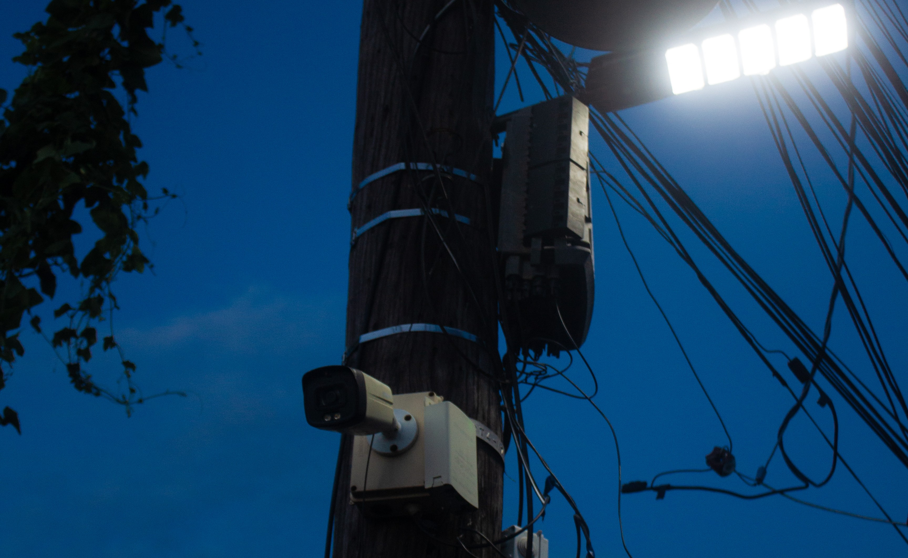
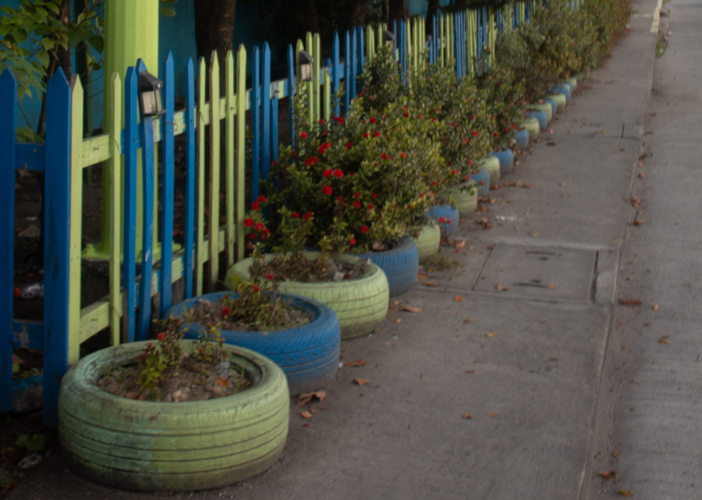
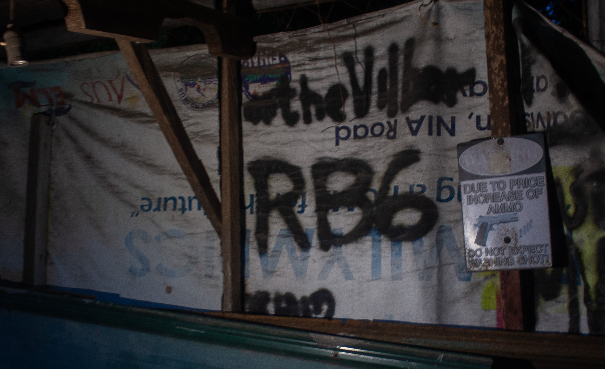
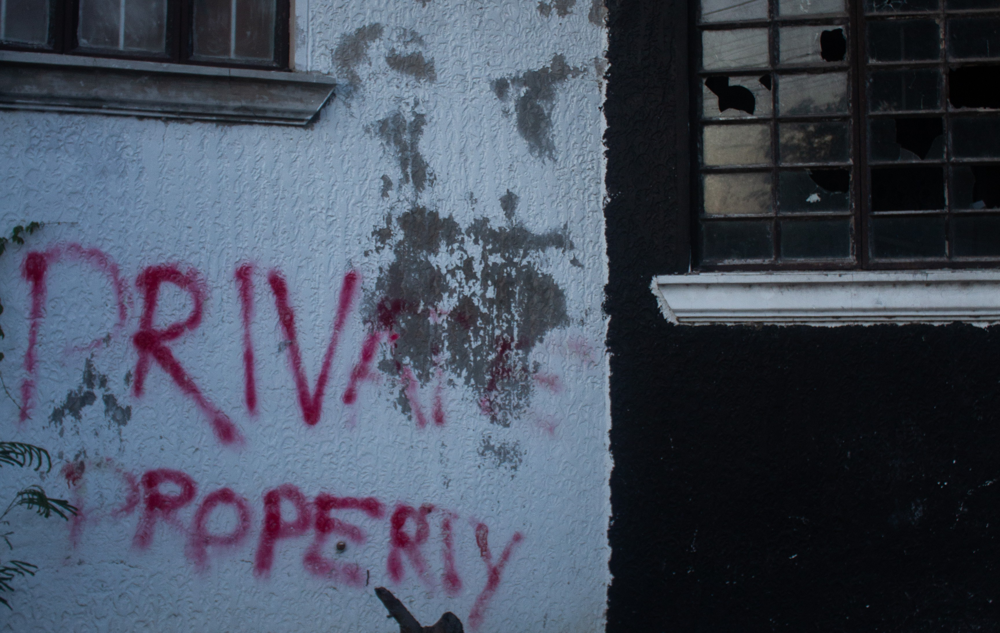
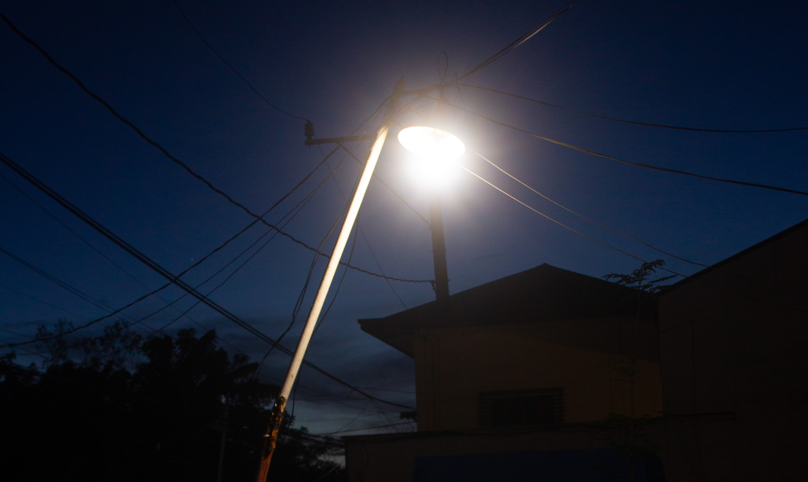

Big Brother is watching you.
War is peace. Freedom is slavery. Ignorance is strength. In a world defined by surveillance, every corner, every light, and every shadow tells a story of control.

Linear and uniform, just what Ingsoc intended.
Fall in line without a moment's hesitation. Don't even try to double think as the thought police shall vaporize your very existence.

Free speech, an art forgotten through the test of time.
What sense is there to scream the truth if there are none left to hear it?

Is there a chance where i can go back?
To be private is a sin to ministry. Keep walking, Winston.

Is it to illuminate?
A light no longer serves the people but to expose that of which hides in the darkness. Look at me, Winston.